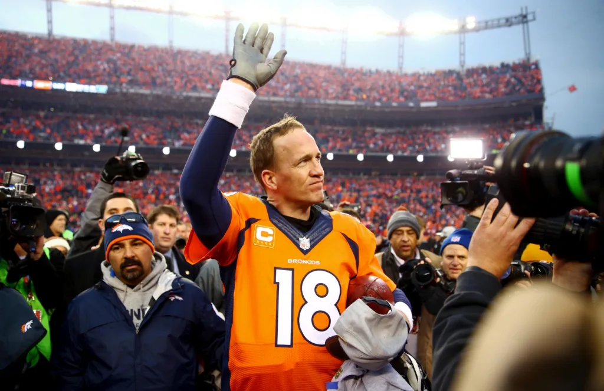

Achievements
MVP Awards
Peyton Manning won the NFL MVP award five times (2003, 2004, 2008, 2009, 2013), more than any other player in history.
Super Bowl Wins
Manning led his teams to two Super Bowl victories: Super Bowl XLI with the Indianapolis Colts and Super Bowl 50 with the Denver Broncos.
Pro Bowl Selections
Manning was selected to the Pro Bowl 14 times during his career, showcasing his consistent performance and popularity among fans and players alike.
Hall of Fame
Peyton Manning was inducted into the Pro Football Hall of Fame in 2021, recognizing his outstanding career and contributions to the sport.
Other Notable Achievements
Manning also holds the record for the most career touchdown passes in a single season (55) and the most career passing yards in a single season (5,477). He was also named to the NFL All-Decade Team of the 2000s and 2010s.